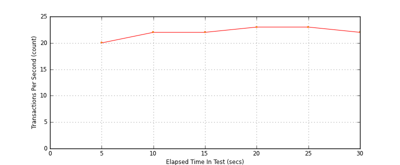
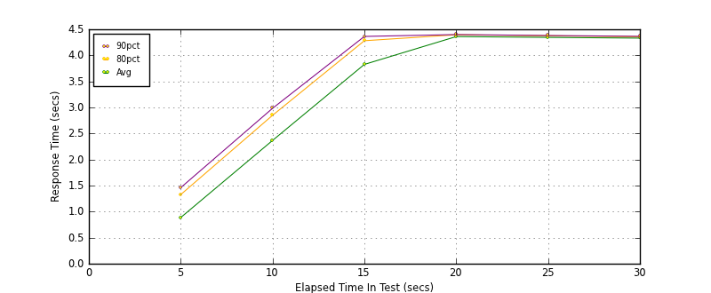
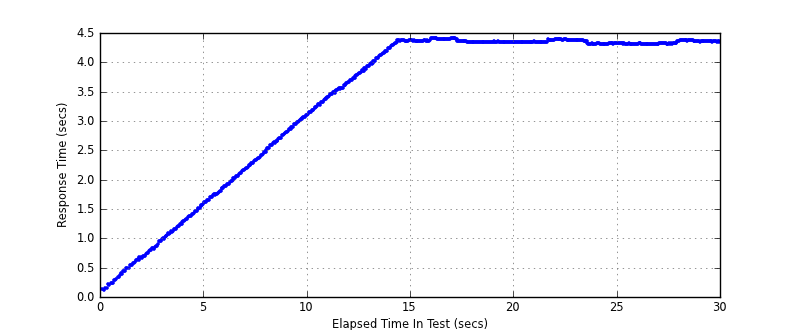

Performance Results Report
Summary
transactions: 772
errors: 0
run time: 30 secs
rampup: 10 secs
test start: 2014-01-17 14:24:03
test finish: 2014-01-17 14:24:33
time-series interval: 5 secs
workload configuration:
| group name | threads | script name |
|---|
| user_group-1 | 100 | read_user.py |
All Transactions
Transaction Response Summary (secs)
| count | min | avg | 80pct | 90pct | 95pct | max | stdev |
|---|
| 772 | 0.105 | 3.397 | 4.357 | 4.372 | 4.388 | 4.405 | 1.313 |
Interval Details (secs)
| interval | count | rate | min | avg | 80pct | 90pct | 95pct | max | stdev |
|---|
| 1 | 103 | 20.60 | 0.105 | 0.886 | 1.327 | 1.460 | 1.542 | 1.607 | 0.425 |
| 2 | 112 | 22.40 | 1.613 | 2.367 | 2.849 | 2.983 | 3.062 | 3.143 | 0.451 |
| 3 | 114 | 22.80 | 3.147 | 3.826 | 4.281 | 4.363 | 4.367 | 4.371 | 0.390 |
| 4 | 115 | 23.00 | 4.331 | 4.361 | 4.395 | 4.400 | 4.404 | 4.405 | 0.025 |
| 5 | 116 | 23.20 | 4.302 | 4.345 | 4.376 | 4.381 | 4.387 | 4.389 | 0.028 |
| 6 | 112 | 22.40 | 4.298 | 4.331 | 4.357 | 4.365 | 4.371 | 4.375 | 0.025 |
Graphs
Response Time: 5 sec time-series
Response Time: raw data (all points)
Throughput: 5 sec time-series

Custom Timer: get_tweets
Timer Summary (secs)
| count | min | avg | 80pct | 90pct | 95pct | max | stdev |
|---|
| 672 | 0.105 | 3.397 | 4.357 | 4.372 | 4.388 | 4.405 | 1.313 |
Interval Details (secs)
| interval | count | rate | min | avg | 80pct | 90pct | 95pct | max | stdev |
|---|
| 1 | 103 | 20.60 | 0.105 | 0.886 | 1.326 | 1.460 | 1.542 | 1.607 | 0.425 |
| 2 | 112 | 22.40 | 1.613 | 2.366 | 2.849 | 2.983 | 3.062 | 3.143 | 0.451 |
| 3 | 114 | 22.80 | 3.147 | 3.826 | 4.281 | 4.363 | 4.366 | 4.371 | 0.390 |
| 4 | 115 | 23.00 | 4.331 | 4.360 | 4.395 | 4.399 | 4.403 | 4.405 | 0.025 |
| 5 | 116 | 23.20 | 4.302 | 4.345 | 4.376 | 4.381 | 4.387 | 4.389 | 0.028 |
| 6 | 112 | 22.40 | 4.297 | 4.331 | 4.357 | 4.365 | 4.371 | 4.375 | 0.025 |
Graphs
Response Time: 5 sec time-series

Response Time: raw data (all points)

Throughput: 5 sec time-series